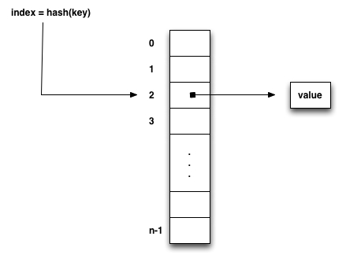
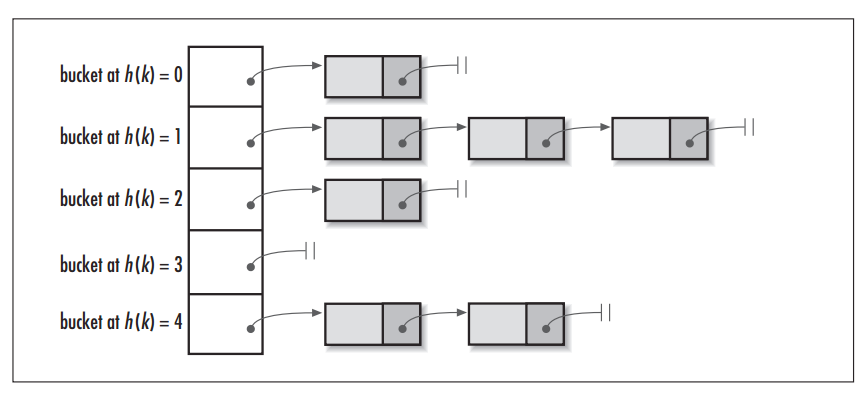

Hashing
Hashing is a technique that can provide very efficient O(1)
searches.
Objectives
- Provide an overview of hashing
- Examine applications that use hashes
- How to resolve collisions with open addressing and separate
chaining
Overview
Hashing is a technique
that applies a function to a data item and this function returns a
numeric value.
More specifically, a hash function
takes a search key and applies a numeric operation, returning a hash code. This hash code is
then used as an index into a hash
table. The data item located at index is the value mapped
to the key. Because hashing provides a direct index to the value, we
say hashing is an O(1) operation.
Generic set()
and getValue()
dictionary operations:
set(key, value)
{
index = hash(key)
hashTable[index] = value
}
getValue(key)
{
index = hash(key)
return hashTable[index]
}

Hash Functions
A hash function must:
1. Convert the search key into an integer value called a hash code.
2. Compress the hash code to a value 0 ... [size of hash table -1]
Example
Generate a hash code for a telephone number
hash(telephone number)
i.e. hash(801-832-2361)
Possible algorithms?
Hash Table
A hash table is a simple array of size N (range 0 .. N-1)
The hash code can be >
(N-1) (We are ignoring
negative values for the moment.)
To address this, we apply modulo arithmetic to the hash code:
index = hash(key) % N
which produces a value between 0
.. (N - 1)
To compensate for negative values, we simply determine the absolute
value of the hash code:
// general hash function:
int hash(K key)
{
int
hashIndex = Math.abs(key.hashCode()) % hashTable.length;
return
hashIndex;
}
Notice this uses the hashCode()
method (which is in the java.lang.Object
class)
- HashExamples.java
Issues
There are several issues related to hashing.
1. Hashing Non-Integer Search Keys
Consider strings. What are some approaches?
(How hashCode()
for java.lang.String
is implemented.)
2. Calculating the Size of the Hash
Table
Not just any value of N will do!
Consider if we choose a value of N, all values of (key % N) are even
for even values of key, and odd for odd values of key. If the data
is disproportionately even or odd, we won't have a uniform
distribution of values in the hash table.
The best choices for a size of a hash table is a prime number > 2.
We also need to waste space!
To obtain the O(1) performance, for a hash table of size N, we want
to have 25% - 33% of the entries in the hash table to be empty. (Or
another way to think about it, we want the ratio of [keys]:[table
size] to be < 0.67)
3. Collisions
Even if we use a relatively large prime number for the size of the
hash table and we implement a good hashCode() function, collisions are
possible. How can collisions occur?
Collision Handling
Two general choices
1. Use another location in the hash table
2. Change the structure of the hash table so that each array
location can refer to more that one value.
Open Addressing (Using
Another Location)
Actually Several Techniques
(1) Open addressing with linear
probing.
If a collision occurs at index k,
try (k + 1), (k + 2), and
so forth until you find an available spot.
- Consider additions
- Consider how retrievals now work
< In the Java API, the IdentityHashMap
is implemented using linear probing. >
(2) Double Hashing
Double hashing addresses the clustering issues of linear
probing by using a secondary hash function.
It works as follows:
hash_value = hash_1(key)
If a collision occurs, the probes are generated according to a
secondary hash function
probe = hash_2(key)
The general algorithm is as follows:
hash_value = hash_1(key)
if collision then
probe
= hash_2(key)
while (table[hash_value] is occupied)
hash_value = (hash_value + probe) % N
table[hash_value] = key
What is the fundamental different between linear probing and double
hashing?
Choice of hash_1() and hash_2()
Functions:
It is important the hash value generates all possible
positions in the table of size N. A suggested strategy:
Choose a prime number N
Choose a twin prime number
M where M < N
i.e. N = 13, M = 11
hash_1(key)
{
return (key.hashCode() % N)
}
hash_2(key)
{
return 1 + (key.hashCode() % M)
}
[Why do we add 1 to the return value?]
As an example:
N = 13
M = 11
key = 197
produces hash indices:
2, 0, 11, 9, 7, 5, 3, 1, 12, 10, 8, 6, 4
Contrast this with linear probing which would produce 2, 3, 4, 5, ....
Another way to think about it ..... linear probing is
essentially double hashing, except the probe value is always 1!
Removing Entries
Consider how we can remove entries from a hash table where open
addressing is being used:
We could use null, but what are the problems with this approach?
We will identify three different types of locations in a hash table:
- Occupied
- The location references a valid entry in the hash table.
- Empty - The location
contains null and has not yet been occupied.
- Available - The
location's entry was removed from the dictionary.
Overall, apart from clustering, what is the other biggest potential
problem with open addressing?
Re-hashing
1. Calculate the new size of the table by doubling its present size
and then increasing its value to the next prime number.
2. Re-hash all existing values.
(2) Separate Chaining
(Change the Structure of the Table)
Each index serves as a hash bucket
which is a reference to a linked list of all nodes that hash to that
index.

< From ITCuties.org>
What are the advantages of separate chaining over open addressing?
Load Factor = (number of
entries in the dictionary) / (number of locations in the hash
table)
As the load factor increases (> 0.67), the performance of open
addressing (particularly linear probing) degrades significantly.
< In the Java API, the HashMap
is implemented using separate chaining. >
General Rules
For open addressing, the load factor should be < 0.67
For separate chaining, the load factor should be < 1.0
If the load factor exceeds these values, the table must be re-hashed
to preserve the O(1) behavior of hashing.
Using hashCode() with Java Objects
An object - Person.java
Simple test program - Test.java
Note that the second key (bill) - although it contains the same name
"Willy"- does not appear in the hash table. The reason for this is
that the two keys hash to different values with the default value of
hashCode().
Ideally, two keys with the same object state should map to the same
value.
A simple implementation of hashCode() appears as:
public int hashCode() {
return 0;
}
- HashPerson.java
- TestHash.java
We now have the same hash code, but the second key still does
not appear. The reason for this is because of the default behavior
of equals().
Recall that unless you override equals() from java.lang.Object ,
its default behavior tests equality by comparing object references.
For this example to work properly, in addition to properly
implementing hashCode()
, we must also override equals().
A requirement of implementing hashCode() is that the hash value of an
object must be synchronized with equality, that is
if ( x.equals(y) ) is true, then ( x.hashCode() ==
y.hashCode() ) is true
The reason for this involves collisions. If two objects have the
same position in the hash table (they collide), you must allow the
hashing algorithm to search for the object you want. The hashing
algorithm will use the equals()
method for the object.
*** Uncomment the equals()
method on HashPerson.java
and run TestHash.java
again. You should now see the proper output that shows both keys william and bill mapping to the
same value Willy
.
In general, when implementing hashCode(), you must construct the hash
for the object on a field-by-field basis. The rules for implementing
hashCode():
(1) For most primitive types, use the following approach:
int result = 1;
. . .
result =
HashUtilities.PRIME * result + primitiveField;
However, make sure that you are using the int value of
primitiveField !
(2) For most reference (object) types, use:
result = HashUtilities.PRIME * result +
objectField.hashCode();
For example, returning 0 was not a good choice as we have ensured
collisions. A better alternative is to use the following method:
public int hashCode() {
int
result = 1;
result = HashUtilities.PRIME * result + name.hashCode();
return result;
}
Note, this uses the value of hashCode() for the name field.
Uncomment this line from HashPerson.java
and re-run the program TestHash.java